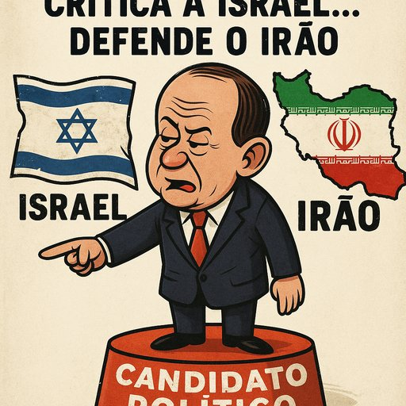

Publicado em 2025-06-23 22:18:56
Luís Marques Mendes, antigo ministro e comentador residente, decidiu agora pisar o palco da presidência da República. A sua estatura política, dizem alguns, está ao nível da física — pequena, mas barulhenta. Num dos seus mais recentes comentários, o agora candidato aproveitou para criticar Israel e, numa ginástica retórica digna de circo, acabar por suavizar os horrores cometidos por grupos como o Hamas e até pelas teocracias repressoras do Médio Oriente.
Criticar Israel é legítimo. O que não é aceitável é fazê-lo ignorando deliberadamente o contexto, os ataques terroristas, os reféns, a violação contínua do direito internacional por parte do Irão, e os múltiplos atentados patrocinados por grupos extremistas. Marques Mendes fala como se fosse um pacificador, mas o que faz é ecoar uma certa esquerda europeia que se tornou refém da sua própria agenda ideológica, sempre pronta a condenar democracias imperfeitas, mas funcionalmente silenciosa perante as ditaduras brutais.
Será este o presidente que Portugal precisa? Um homem que, em vez de defender os valores democráticos e a verdade histórica, parece navegar à boleia do politicamente conveniente?
O Médio Oriente não precisa de mais opinadores neutros entre terroristas e vítimas. Precisa de lucidez, de coragem moral e de uma clara distinção entre civilização e barbárie.
Portugal, por sua vez, precisa de estadistas — não de homens com grandes ambições e opiniões minúsculas.
Não, senhor Marques Mendes. A Presidência da República não é lugar para contabilistas da moral nem para tecnocratas do silêncio confortável.
,Artigo da autoria de Augustus Veritas Lumen in Fragmentos de Caos
"O Médio Oriente não precisa de mais opinadores neutros entre terroristas e vítimas. Precisa de lucidez, de coragem moral e de uma clara distinção entre civilização e barbárie."